稍微紀錄一下 DEF CON 26 CTF 這幾天的事情...
有些情況是睡醒之後聽大家轉述的，如果有誤還麻煩指證 XD
Day 0
趕工封包分析工具，寫出各種 bug ... 早知道前幾天就少玩一點 switch 了 XD
其中最麻煩的 bug 是發現封包如果時間非常接近時有 race condition 的問題，先發生的測試會被覆寫成同一次結果，搞東搞西弄到早上快五點才讓工具能正常工作 Orz
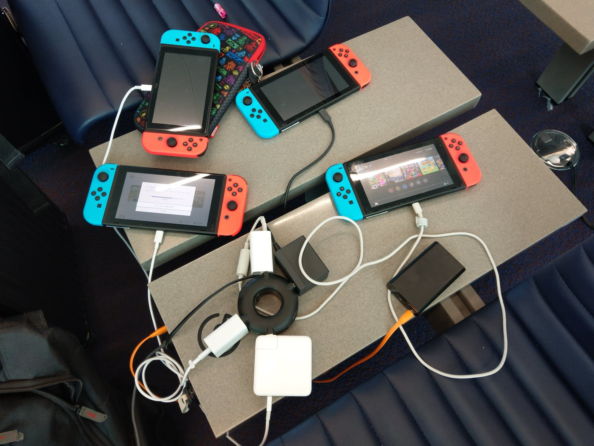
Day 1
唯一下去會場的一天，一開始現場網路大爆炸，對外網路 1800ms 的延遲 XDD 比賽延後一小時開始，預料之內的因為主辦方更換，規則也跟著有所變動：
- Attack & Defense 的算分不再是零和制
- Attack point 打多少隊伍就得多少分
- Defense point 有成功擋住攻擊會獲得分數
- 不太確定到底是怎麼判斷成功防禦，主辦方到第三天才把分數算對...應該算對了吧?
- 除了 A&D 以外也同時有 King of the Hill 的題目，前五名就會分別獲得 10, 6, 3, 2, 1 分
- 個人覺得這樣的配分比較理想，大家不會因為第一名領先太多而放棄 KoH 的題目。
- 禁止 access 到 gamebox，也不能連到其他隊伍的網路
- 每題隨著 exploit 的數量而有不同的狀態，由好到壞的順序是 GOOD-> LOW -> BAD -> INACTIVE，變成 INACTIVE 就不能再打了
- 大家可以根據題目的狀態評估這題的投資報酬率，個人覺得這個設計還不錯
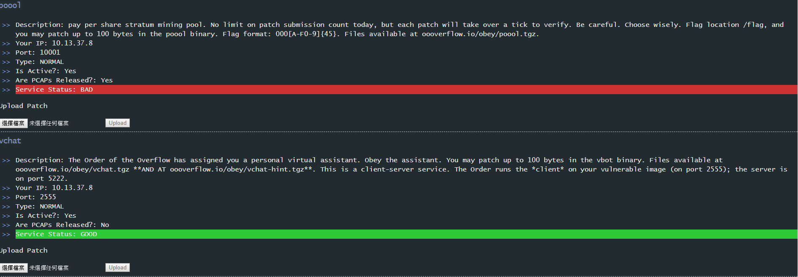
原本要寫自動抓 pcap 並根據 service 分割後分類保存的 script，結果今年規則 pcap 會到 service 快被打爛才給......XDD 頓時沒事情做，同時宣告昨晚的封包分析工具幾乎做白工了 = = BTW，後來 lsc 抽空把 script 寫完了 <(_ _)> 大家讀完規則心情都不太美麗，因為之前趕工的 tool 幾乎沒有用武之地了 Q__Q
取得 pcap 的管道是從 web 頁面下載，不像往年是從 sftp 下載，用 web 我是沒意見，但為什麼不另外做一頁來讓大家載 pcap = =
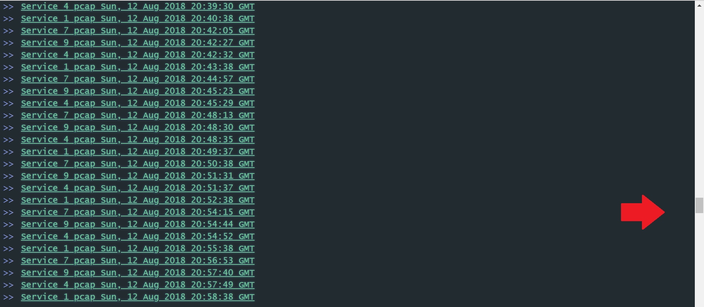
開賽後放出一道 KoH 的題目 reverse，下載 binary 執行後發現是一個 cloze 問答遊戲，題目會將 assembly 的片段挖空，要從選項回答正確的答案，但後來發現選項有重複甚至根本答案是錯的...= = 嘗試 reverse 並 patch 程式，但 server 端有檢查數據而行不通。
後來大致可分兩組人馬用不同方式解這題：
- Parse output 組 (sean & david942j)
- Reverse protocol 組 (lays & jery 和樓上其他人?)
我嘗試用 gdbscript hook 處理 output 的 function，再 parse 題目自動解題，但後來發現進度落後其他人，就沒有繼續嘗試了。
下午放出新題 pointless，binary 是 mips 的架構，連上去之後得到了一些 base64 的字串，解回來是一個很大的數字，初步猜測是 crypto 相關的題目。
原本想丟到 RetDec 做 decompile，但發現 online service 已經關了，改成 open source 讓大家自己用工具處理，裝了一下 ida plugin 覺得難用，就倚賴 orange 和 jery 幫忙 decompile，一開始解出的 code 有幾十萬行...根本不能看 = =，後來把 gmpz 的 library 餵進去之後，剩下 4000 餘行，大家比較能開始找洞在哪。
待到下午四點左右實在撐不住了，先回樓上睡覺，睡醒得知有放兩道新題 doublethink 和 twoplustwo，jery 已經發現 pointless 一個 memcpy 的漏洞，但因為前面的 crypto 沒辦法解，所以還是不能串整個 exploit，大家跟 lyc12345 遠端討論了一下 RSA 要如何破，但因為飯店網路有問題沒辦法好好的寫 code 測試。
DEFKOR00T 打出 twoplustwo 的 firstblood，david942j 有發現漏洞但是還沒辦法成功利用。
PPP 已經成功打出 pointless 的 firstblood，據說得知主辦方出包跑的題目是 x64 的版本，也因為這樣我們猜測一定還有一個能讀 flag 的邏輯洞，否則 PPP 不太可能成功打下 XD
晚餐時間發生了小插曲，要用 ubereat 定麥當勞當晚餐，angelboy 原本想訂麥克雞塊套餐，結果點到快樂兒童餐，而且有一票人喊 +1，大家因此得到了好幾個 Mario Odyssey 的玩具 XDDD
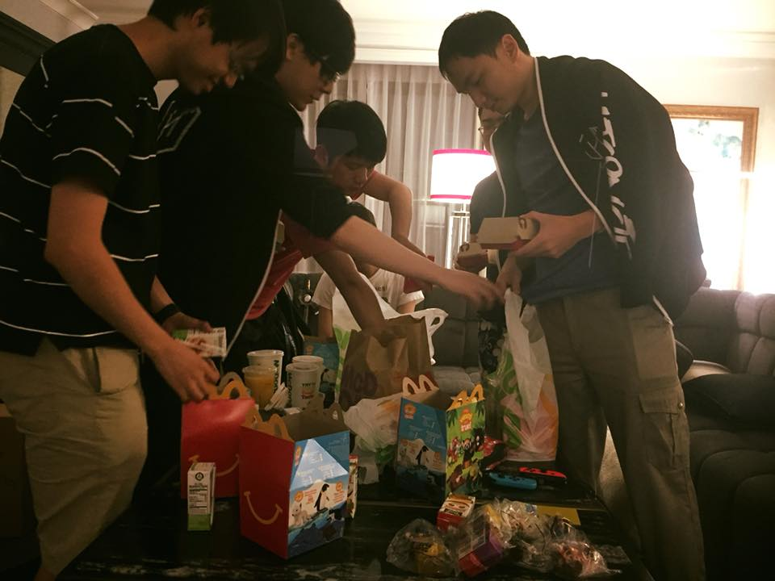
Day 2
晚上大家分成三組解 pointless、twoplustwo 和 doublethink，pointless 看一陣子之後覺得幫不上忙，決定改去解 doublethink。
doublethink 也是 KoH 的題目，規則是上傳一份 shellcode，能同時跑在越多架構上則獲得越高分，一共有 14 個平台，分成 present, past, future 三類：
- past
- lgp-30
- pdp-1, pdp-8, pdp-10
- mix
- ibm-1401
- nova
- present
- amd64
- arm64
- mipsel
- future
- risc-v
- hexagon
- mmix
- clemency
雖然有 14 個平台，但 present 只能選一個來跑，因此理論上最多可以拿到 12 分。
review 完主辦方給的環境後，發現每次 shellcode 在執行的環境沒有互相隔離，amd64 拿來跑 shellcode 的 binary 也沒有任何的防護，推測是可以拿 shell 來做一些壞事，但因為有降權成 nobody，一開始沒有看到什麼明顯的問題。
後來 jeffxx 發現 past 系列都會將 instruction pipe 給 simulator 執行，推測這邊有 race condition 的問題，可以 hijack fd 來影響 output，摸索了一陣子成功做出 POC，證明 jeffxx 的猜測正確。
最後分的 exploit 分成三個人完成：
- sean 負責串 present 和 future 的 polyglot shellcode，成功串了
amd64+risc-v+hexagon - jeffxx 將 POC 改寫成可以穩定觸發 race condition 的 shellscript
- 我負責把 POC 寫成不需要透過 reverse shell 就能執行 shell script 的版本
- 有過今年 SECCON final 前車之鑑，現在寫 exploit 都盡可能寫成不需要 reverse shell 的版本，後來證明改寫是必要的...
因為沒注意到 service.py 會執行 killall 的問題，debug 很久才確認沒辦法跑一份 shellscript 就 hijack 全部 past 架構，完成時已經接近早上八點吃早餐的時間了，BTW，優等生 twoplustwo 組很早就完成 exploit 然後先去睡了，羨慕阿~~
隔天開賽主辦方又出包了...XD，A&D 推遲到中午才開始，KoH 早一點，11 點就可以開打，昨晚精心撰寫的 exp 成功的打下了 11 個平台...才怪，一開始沒有成功打出 exploit，只能眼看著 Dragon Sector 成功打出 9 個 exploit Orz
如昨晚預期的可能沒有 reverse shell 可以用，暗自慶幸有熬夜改寫成寫檔的版本，但寫檔的版本也沒有成功打下 11 個平台...。
原本以為是主辦方的環境有禁止寫檔，要改寫成純 assembly 的版本，但越想越不對勁，於是先用 open+write 再用 sendfile 確認寫檔是否能成功，結論是有成功寫檔，但是一直噴出重複的內容，猜測是重複執行寫檔了，至今還是不曉得為什麼會造成這種情況...由於寫檔會一直 loop，可想而知 shellscript 的內容也重複了，正在思考如何改寫時，bruce30262 神來一筆說直接在最後插 exit 就好了，真是睿智 XD
在經歷一番波折後成功的打下了 11 個平台，一開始主辦方不知道為何沒吃到紀錄...，打了第二次才成功將記錄更新，話說因為最後 exploit 要各平台手動執行，在打名稱時手都抖抖的很怕自己打錯就要重來了 XDDD
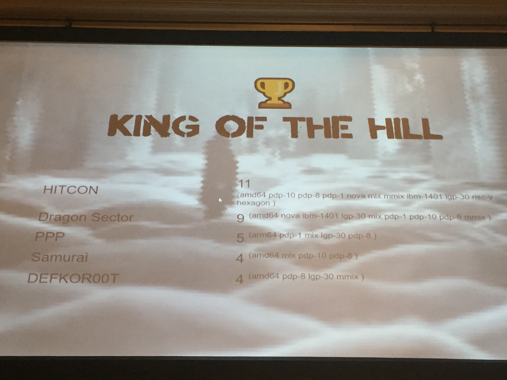
同時 A&D 的狀況似乎不太樂觀，pointless 因為 mips 跑得太慢，攻擊很容易打不成功，而 twoplustwo 因為洞太簡單，大部分的隊伍已經補上，也沒有成功拿到多少分數......，確認 doublethink 穩定拿分，而且 sean 暫時沒有想串 clememcy 的念頭我就先去睡了。
睡覺的途中放了新題 oooeditor 和 poool，oooeditor 在我還神志不清的時候大家就解掉了 <(_ _)> 沒多久 oooeditor 的洞幾乎全世界都補上，主辦方放出 pcap 時根本沒用了 = = 這題的狀態也很快就變成 INACTIVE，大概是壽命最短暫的一題了，poool 是關於 blockchain 的題目，這領域我不太拿手，打開稍微看一下就沒繼續深追了，沒多久 DEFKOR00T 成功打出了 firstblood ... 由衷佩服他們挖掘漏洞的速度 Orz
沒多久又放了新題 bew，是由 node.js 架設的 web 服務，能 patch 的檔案是 web assembly，建設 docker 時發現 npm 有噴 express-validator 這個套件的 security issue，但看了一下是用來做 DoS 的，估計是沒什麼用，我們還在傻傻的看 wasm 的時候，orange 成功黑箱踹出可以 js injection，沒多久就成功拿到 flag，可惜 PwnThyBytes 更早了一些，沒成功拿到 firstblood QQ。由於這題的 payload 會直接被記在 web 的某個頁面上，這題大家很快就打得滿天飛了，大家研究了很久該如何 patch，最後發現 wasm 裡面的 eval 不是觸發 injection 的點，orange 寫了一個簡易的 waf 阻止被攻擊，貌似有成功防禦當時大家的 payload ... 但後來他自己想到繞過的方式了 XDD
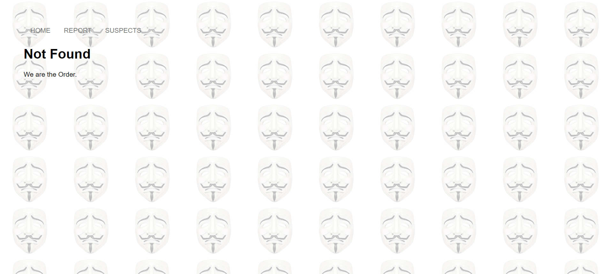
第二天結束前放了新題 vchat，另外由於開賽 delay，第二天延到 21:00 才結束，主辦方宣布了一些事項，其中比較重要的是他們發現 Defense point 有算錯，明天會將修正後的分數公佈，在等待晚餐到來之際，手機陸續收到了沙塵暴和大洪水的災難通知 XDDD，只能感謝 turkey 和 alan 在這種天氣下幫我們張羅晚餐 <(_ _)>，晚餐是好吃的中式餐館，可以排名今年來 Les Vegas 前三好吃的食物 XD。
Day 3
晚上也是分成三組在看題目，分別是 poool、bew 和 vchat，考慮了一下決定看新題 vchat，投資報酬率應該會比較高(後來證明大錯特錯...)。
題目給了兩個檔案 vchat 和 vbot，前者只是一個 shellscript 來執行 vbot，後者是一個 binary，觀察了一陣行為得知是 xmpp 協定的 client，嘗試裝了各種 open source 的 server 都沒辦法好好的跟 vbot 互動，後來在 jeffxx 神一樣的通靈之下，理解到原來 vbot 會以 anonymous 的身分登入，因此要讓 vbot 主動跟我們的 client 聯繫，我們才有辦法得知 id 並傳送指令，至此已經接近凌晨 3 點了...。
接著分頭進行逆向和撰寫 client，但竟然找不到一個文件齊全的 library 使用，一直卡在 anonymous 認證這邊不曉得怎麼處理，後來 jeffxx 跟 meh 決定直接用題目用的 gloox 來寫 client XD
到早上六點 client 基本上可以動了，但找不到洞在哪... 我一度以為處理 QRcode 的地方會 heap overflow，但其實不會，base64 疑似有 off-by-one 的漏洞，但是在保護全開又沒辦法正常 leak 的情況下似乎不太能利用，就這樣抱著會被其他隊伍打爆的心情開賽了，結果竟然風平浪靜，沒有隊伍看出問題在哪，另外主辦方在設置環境時就先給了 vchat-hint.tgz ...，解開後發現是 server 和 client 的 Dockerfile，眾人猜測是昨天忘記附上...... 有了 server 昨天至少可以省下兩小時的時間 = =
第三天秀了一下修正 Defense point 的結果，我們似乎上升到了第三名，接著就如往年的慣例不再顯示記分板，但聽說偶爾會顯示匿名的戰況。
bew 這題遇到跟 pointless 差不多的慘劇，打了幾輪之後發現有隊伍開始 DoS 服務，patch 系統也發生問題，沒辦法把 atdog 昨晚精心設計的 patch 給傳上去，甚至發生之前傳的 ok，但重傳一次就變成 SLA FAIL 的慘況，過沒多就這題就關了。
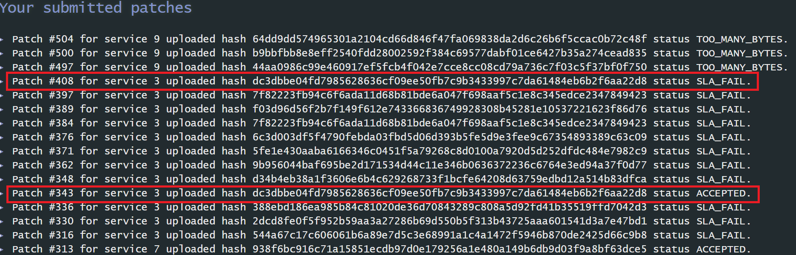
poool 開賽打出非常好的效果，一開始約莫可以打 20 隊左右，猜測是因為主辦方今天突然宣布只能 patch 100 byte，大家昨晚的 patch 沒辦法成功上傳的原因 XD 唯一可惜的是一開賽 poool 的狀態就是 LOW，過一陣子又變成 BAD 了，否則應該應該可以賺更多分數。
開賽後沒多久放了新題目 reeducation，是個 rust 的執行檔，果斷放生 vchat 來看這題，對 rust 逆向不甚熟悉，還好有 jery 在旁可以詢問，用手動亂 fuzz 有發現 input 要超過 1024 byte 才會觸發執行失敗的錯誤訊息，後來又發現餵 non-printable 可以戳出 out-of-bound 的 exception，但沒看出有哪邊可以利用。
過一陣子 DEFKOR00T 又打出了 firstblood，後來許多隊伍也開始打出攻擊，但我們遲遲沒辦法找到問題 Q__Q 一直到結束前一小時才發現是個很簡單的 out-of-bound 漏洞.....，主辦方原本要放出 pcap，但卻忘記錄流量，直到我們去反應才發現，沒多久就成功 replay 了 (因為洞真的很簡單)，主辦方似乎對我們沒找到這麼簡單的問題感到驚訝...Orz
在結束前我也成功寫完了可以 leak flag 的 exploit，但為時已晚，大家很擔心會因為這題而被翻盤，順帶一提這題只能 patch 16 byte，在發現問題後 jery patch 了 13 byte 的版本並上傳，卻顯示 TOO MANY BYTE ... XDDD
在我因為 reeducation 焦頭爛額時，主辦方也放了最後一題 KoH propaganda，只有大概了解是一個比用最少 byte patch 程式的題目，我們似乎一直在第五名左右徘徊，這題應該是唯一一題我完全沒有看過的題目。
賽後跟大家一起發送鳳梨酥給各隊伍，跟其他隊伍交流了一下題目的做法，也炫耀 (?) 了一下 doublethink 是怎麼做到 11 個平台的 XD，Dragon Sector 果然也是用同一招解的，PPP 串了八個平台跟神一樣...，BFS 也串了五個平台，而且還是分兩邊進行再接在一起，也是滿不簡單的 XDD
vchat 的洞聽說是跟 gloox 有關，老實說有猜到洞可能會是不當使用 library，但比較把心思花在各個指令的功能上，沒有認真的把處理 xmpp 的邏輯看一遍，早知道應該放棄 vchat 早點睡覺，reeducation 應該就不會沒看到那個廢洞了 QQ
賽後交流的期間主辦方把 DEFKOR00T、PPP 還有 HITCON 的隊長叫過去集合，說等等頒獎時務必要到場，大概就猜到應該有前三名了，閉幕儀式跟往年一樣整個睡死，途中換個姿勢睡，結果一睜眼就有一顆球飛過來 = = 順手擋了一下球又往後面飛去了，不知道後來被玩到哪去了 XDD 今年是第一次讓前三名上台領獎，過往都只有第一名上台而已，可惜我不太上相...QQ
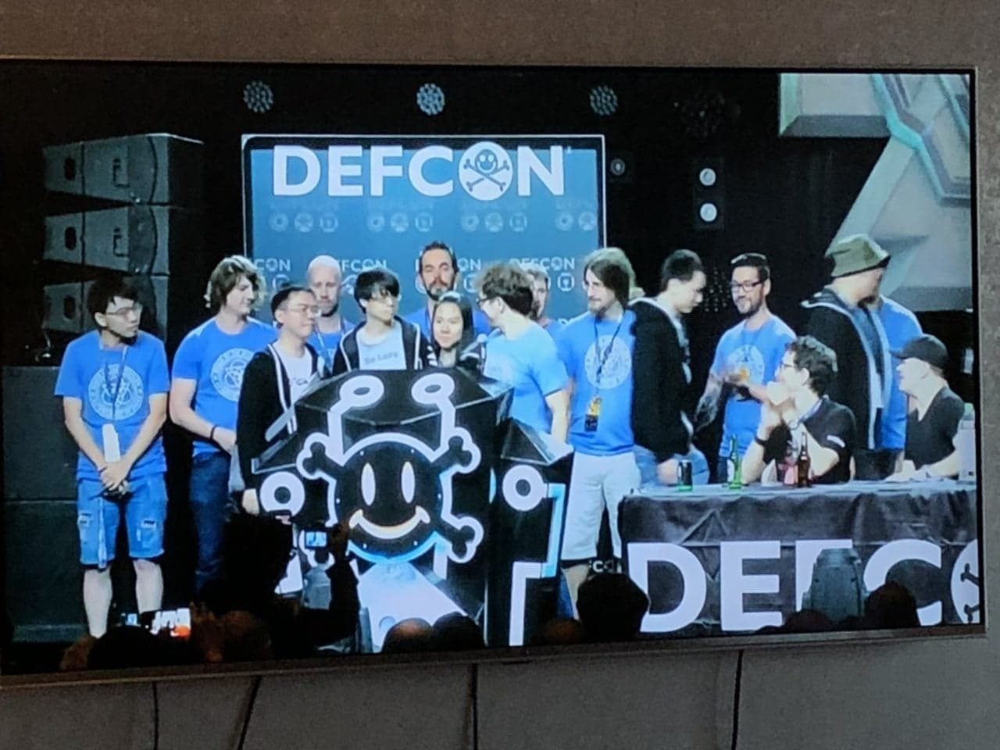
結束跟去年一樣吃 Caesar 的 buffet，螃蟹腳吃到飽就是爽 (?) angelboy 也太會剝螃蟹了吧 = = 吃完跟 jeffxx、lsc、lays 去賭輪盤，jeffxx 沒多久就輸光退場了，我接著也輸光退場 QQ Lays 原本也要輸光了，結果連續梭兩次從 $10 變成 $40，有夠扯...= = lsc 還在各種奮戰，但 after party 的時間到了，就先回房間跟其他人會合會合一起過去，房間在玩 Overcooked，四個人玩到快要吵架了...XDDD
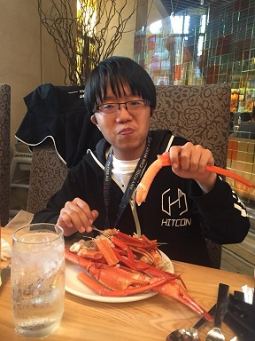
after party 是 OOO 提供的總統套房，有超大電視螢幕、兩層樓、撞球桌和疑似廚房的空間，真的猛，但即使這麼大的空間場地還是被塞爆了，現場可能有快 100 人吧 = = 今年好像沒有 PCTF 的衣服好拿，只好改拿 shellphish 的衣服，現場人實在是太多了，只有跟 TokyoWesterns 和 Shellphish 的成員聊到天，沒多久就回去行政套房加入 switch party 的行列了 XD
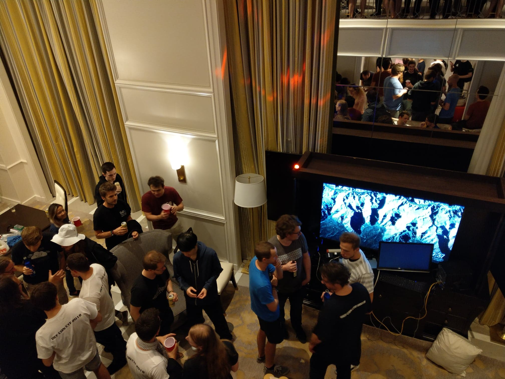
後記
今年的 DEF CON CTF 因為 infrastructure 不穩定，大家還滿困擾的，但題目本身的品質還不錯，幾題 KoH 大家都玩得很盡興，尤其是 doublethink，在撰寫這篇文章時已經看到有串 9 個平台的版本了...真的是太瘋狂了 XD 還好主辦方最後允許用 race condition 的方式做題，否則今年能不能保住前三名實在難說 QQ
開始工作之後解 jeopardy 的能力大幅下滑了 QQ 稍微難一點的 pwn 題都要想很久才有辦法解，如果比較新的 trick 就更不會了 T__T 但這兩年打 DEF CON CTF 反而做出比較多的貢獻，大概是基礎能力全面提升了吧? 今年的 doublethink 應該是我寫過的 exploit 裡面拿最多分的一次了，爽 XD
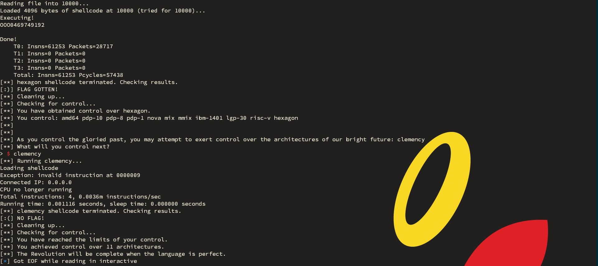
不知不覺也打 CTF 5 年了，但對 real world 的漏洞挖掘還是沒有什麼突破 Q__Q 還要更加努力阿...！
最後放張 jery 難得有入鏡的大合照做結尾 XD
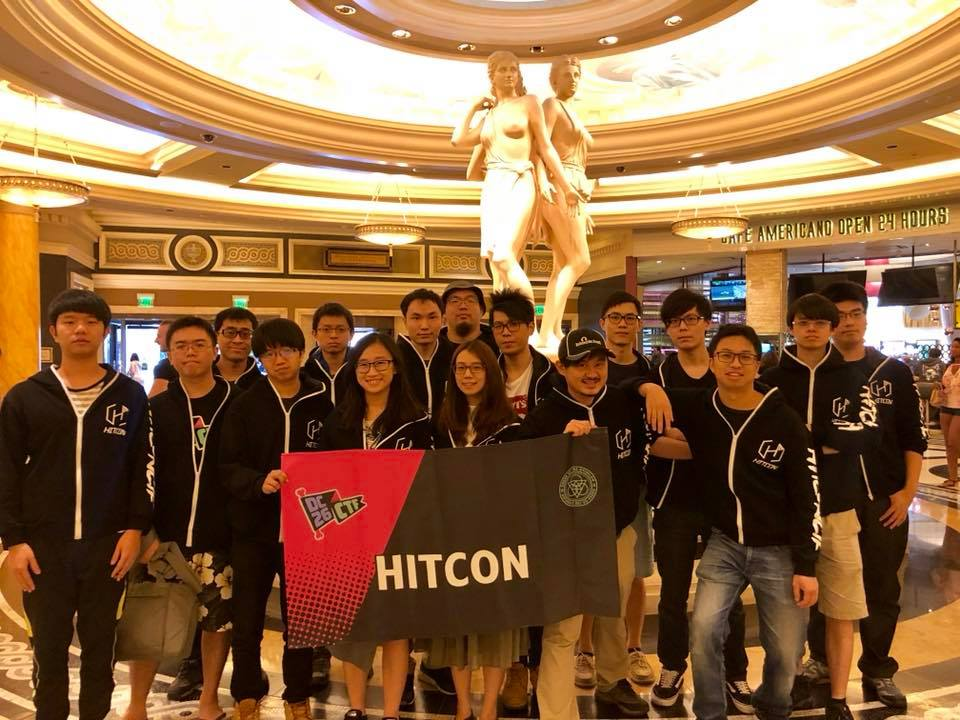